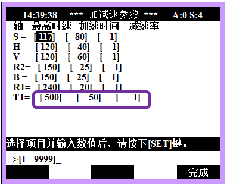

机器人轴速度超出最高速度。这属于机器人没有正常受控制的状态，从而被判为错误而停止机器人。
从主板向伺服板发送指令时，发送限制指令以免超过最高速度。因机器人不能跟随此指令而在速度上发生overshoot时，则会发生超出最高速错误。
|
1. 请确认机器人姿势是否接近于特异点附近。 2. 附加轴请确认加减速参数设定值和工作中的负荷率。 3. 请调整作业程序。 |
(1)请确认机器人姿势是否接近于特异点附近。
在特异点附近的姿势中，若不是执行PtP插补而是执行L插补或C插补，可能会发生此错误。特异点在B轴接近0deg的情况和手腕部中心接近S轴旋转中心轴时发生。若需要经过特异点附近，请把该步骤变更为PtP插补。
(2)附加轴请确认加减速参数设定值和动作中负荷率。
附加轴加减速参数的最高速度过高或加速时间过短而导致马达扭矩不足。此时，应观察机器人工作中的负荷率并降低I/Ip最高速度或大幅调整加速时间。
Ø 系统
Ø 3. 机器人参数
Ø 6. 加减速参数
在此可以修改附加轴的加减速参数

(3)请调整作业程序。
请变更作业程序的相关步骤或之前步骤的步骤条件。第一、变更为“Acc=0”;第二、降低步骤的速度;第三、在移动路径中添加一个步骤，按照以上方法变更程序条件。